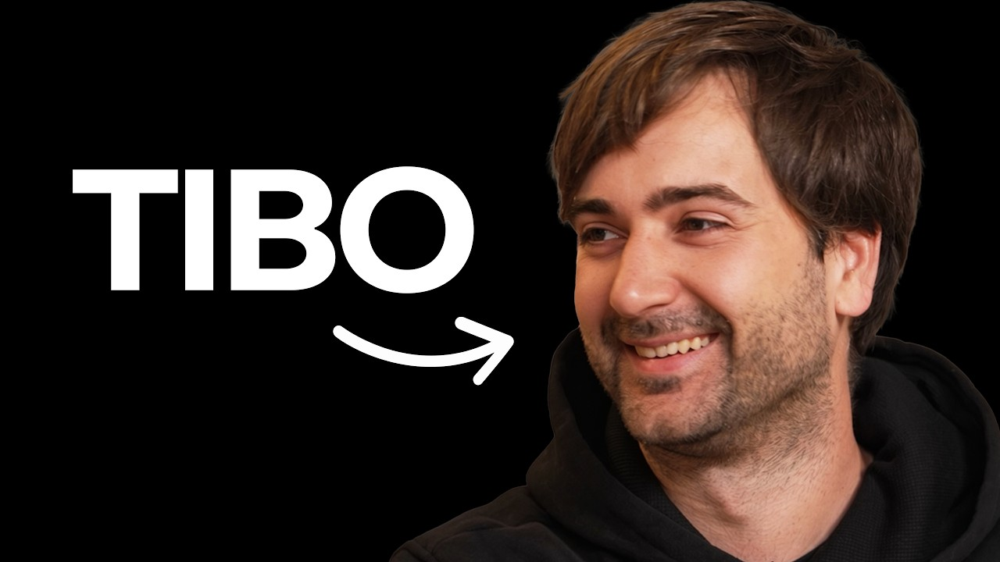

목소리
티보 인터뷰
THE NEXT AI WAVE

OpenAI의 티보가 매튜 버먼과 Google · DeepMind 시절의 교훈, 개인 에이전트, Codex, 초고속 추론, 재귀적 자기개선과 AI의 대중화를 이야기한다.
- 러닝타임
- 44:28
- 구성
- 07 CHAPTERS
- 한국어 번역 전사
- 142 KOREAN PARAGRAPHS
CARROT CAVE INSIGHTS
- AI의 다음 파도는 모델 자체보다 사람의 흐름에 맞춰지는 개인 에이전트에서 시작된다.
- 초고속 추론은 여러 에이전트를 관리하는 부담을 줄이고, 한 가지 생각을 끝까지 밀어붙이는 흐름을 회복시킨다.
- 좋은 제품은 기능을 쌓는 것보다 방향의 일관성, 단순함, 빠른 출시를 함께 지켜야 한다.
- 모델의 자기개선은 연구 모델을 만드는 일뿐 아니라 추론 인프라와 도구 사용을 스스로 개선하는 일까지 포함한다.
- AI의 효율이 높아질수록 더 넓은 접근성과 일상에서 직접 얻는 효용을 목표로 삼을 수 있다.
인터뷰 정보·출처와 방법
- 원제: How to Understand the Next Wave of AI Before Everyone Else | Tibo Interview
- 인터뷰이: OpenAI의 티보(Tibo)
- 인터뷰어: Matthew Berman
- 채널: Matthew Berman
- 공식 게시: Matthew Berman, 2026년 8월 24일
- 작성 방법: YouTube 영어 자동자막의 중첩을 정리하고 문장 단위로 묶은 뒤 한국어로 번역해 공식 영상 타임코드에 맞춤
전체 한국어 번역 전사
전체 전사를 불러오는 중입니다…
Google · DeepMind에서 배운 출시의 교훈
00:00:00 ↗Google · DeepMind에서 언어 모델과 연구 도구를 만들던 시절을 돌아본다. 기술이 있어도 출시를 주저하면 사용자의 피드백과 실제 영향으로 이어지지 않는다는 교훈을 말한다.
OpenAI의 문화와 스스로를 바꾸는 속도
00:04:22 ↗확신을 갖고 사용자 피드백을 빠르게 받으며, 기존 성공을 잠식하더라도 더 나은 방향에 자원을 옮기는 OpenAI의 문화를 설명한다.
개인 에이전트와 개발 방식의 변화
00:07:23 ↗스킬 파일과 여러 하위 에이전트를 사람이 관리하는 현재의 불편을 넘어, 사용자와 팀의 목표를 깊이 이해하고 능동적으로 돕는 개인 에이전트의 방향을 이야기한다.
ChatGPT · Codex 통합과 인간-AI 상호작용
00:14:27 ↗코딩과 비코딩을 나누지 않는 하나의 개인 에이전트를 위해 ChatGPT와 Codex를 합치는 이유, 음성 중심 인터페이스와 사람마다 달라지는 상호작용을 설명한다.
경쟁보다 가치, 한도보다 접근성
00:20:25 ↗Anthropic과의 경쟁 자체보다 OpenAI가 고유하게 잘할 수 있는 일과 가치에 집중한다고 말한다. 효율 향상과 한도 조정을 통해 더 많은 사람이 강력한 AI를 쓰게 하는 접근을 설명한다.
재귀적 자기개선과 프런티어 훈련 중단
00:30:25 ↗모델이 다음 모델뿐 아니라 추론 인프라, CUDA 커널, 제품과 도구 사용 방식을 개선하는 넓은 의미의 재귀적 자기개선을 설명하고, 프런티어 훈련을 멈출 조건을 논한다.
초고속 AI가 여는 다음 사용 방식
00:34:13 ↗장애 대응처럼 매초가 중요한 상황에서 쓰는 초고속 추론이 개발 흐름을 어떻게 바꾸는지, 비용 하락과 함께 이런 속도가 보편화될 가능성, AI를 직접 써봐야 하는 이유를 말한다.